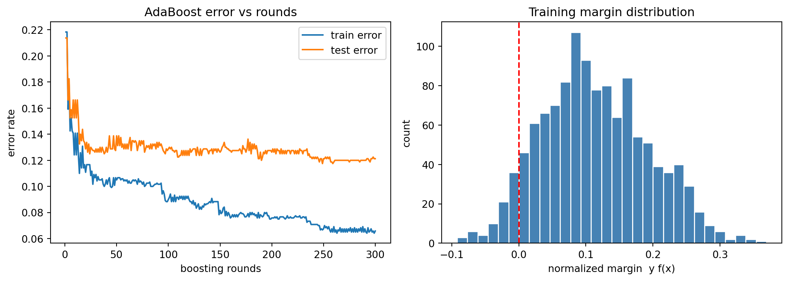

Boosting is one of the most influential ideas in supervised learning. It begins with a question that sounds almost paradoxical: can a collection of rules of thumb, each only slightly better than random guessing, be combined into a single rule that is arbitrarily accurate? The answer, established theoretically in the early 1990s and confirmed empirically ever since, is yes. This chapter develops the conceptual and mathematical foundations of boosting. We treat the notion of a weak learner, the additive model that boosting builds, the forward stagewise procedure that fits it, the margin theory that explains why boosting often resists overfitting, and the structural contrast between boosting and bagging.
109.1 1. Weak Learners and the Boosting Premise
109.1.1 1.1 The weak learnability question
Consider a binary classification problem with inputs \(x \in \mathcal{X}\) and labels \(y \in \{-1, +1\}\). A classifier \(h: \mathcal{X} \to \{-1, +1\}\) is called a weak learner if it performs only marginally better than chance. Formally, with respect to a distribution \(D\) over examples, \(h\) has error
for some small edge\(\gamma > 0\). A strong learner, by contrast, can achieve error below any target \(\delta > 0\) given enough data. Kearns and Valiant posed the question of whether weak and strong learnability are equivalent, and Schapire answered it constructively: any weak learner can be boosted into a strong one. This equivalence is the theoretical bedrock of the entire field.
The practical reading is liberating. We do not need to engineer a single powerful model. We need only a procedure that reliably finds a classifier with a positive edge, and a disciplined way to aggregate many such classifiers.
109.1.2 1.2 What makes a learner weak
The canonical weak learner is the decision stump, a tree of depth one that thresholds a single feature:
if x[j] <= t: predict +1
else: predict -1
A stump cannot capture interactions or curved boundaries, so on its own it underfits badly. Yet on almost any nontrivial dataset there exists some feature and threshold that beats random guessing, which is all boosting requires. The art of boosting is that the weak learner is re-trained many times, each time on a re-weighted view of the data that emphasizes the examples previous learners got wrong.
109.1.3 1.3 The reweighting intuition
The mechanism that turns weakness into strength is adaptive reweighting. Round one fits a stump to the original data. Examples it misclassifies are assigned larger weights, so round two is forced to attend to the hard cases. Each successive learner specializes in the residual difficulty left by its predecessors. Because the ensemble accumulates complementary competencies, its aggregate decision can be far richer than any individual member. We now make this precise.
109.2 2. The Additive Model
109.2.1 2.1 Ensembles as additive expansions
Boosting produces a prediction function that is an additive expansion in a family of basis functions:
where each \(b(x; \theta_m)\) is a base learner (a stump, a small tree, a spline) parameterized by \(\theta_m\), and \(\beta_m \in \mathbb{R}\) is its coefficient or vote. For classification the predicted label is \(\hat{y}(x) = \mathrm{sign}\big(F_M(x)\big)\), and the magnitude \(|F_M(x)|\) measures confidence.
This is a flexible function class. A sum of stumps can approximate any decision boundary as \(M\) grows, much as a sum of sinusoids approximates a periodic signal. The central modeling decision is therefore not the form of \(F_M\) but how to choose the parameters\(\{\beta_m, \theta_m\}\).
109.2.2 2.2 The loss minimization view
Ideally we would jointly minimize a loss \(L\) over the entire expansion,
For squared error and a small basis this is tractable, but for general losses and large \(M\) the joint optimization is intractable and prone to overfitting. Boosting sidesteps the joint problem with a greedy approximation that adds one term at a time and never revisits earlier terms. This greedy strategy is forward stagewise additive modeling.
109.3 3. Forward Stagewise Fitting
109.3.1 3.1 The generic algorithm
Forward stagewise modeling builds \(F_M\) incrementally. Initialize \(F_0(x) = 0\) (or a constant minimizing the loss). At each round \(m\), solve
The coefficients and parameters of previously added terms are frozen. Each round asks a single focused question: given everything fitted so far, what one additional basis function most reduces the loss?
F = 0
for m in 1..M:
(beta, theta) = best base learner reducing L(y, F + beta*b(x; theta))
F = F + beta * b(x; theta)
return F
109.3.2 3.2 AdaBoost as exponential-loss stagewise fitting
The original AdaBoost algorithm was derived from an algorithmic argument about reweighting, but it has a clean interpretation as forward stagewise fitting under the exponential loss
\[
L(y, F) = \exp(-y F).
\]
Plugging this into the stagewise objective, round \(m\) minimizes
These weights do not depend on \(\beta\) or the current base learner, so they act as fixed data weights for the round. Carrying out the minimization for a \(\{-1,+1\}\)-valued base classifier yields the familiar AdaBoost updates. The optimal base learner is the one with smallest weighted error
After each round the weights are multiplied by \(\exp(-\beta_m y_i b(x_i))\) and renormalized, which increases the weight on misclassified points and decreases it on correct ones. This recovers, line for line, the adaptive reweighting described informally in Section 1.3. AdaBoost is thus not an ad hoc heuristic but coordinate descent on exponential loss in the space of base learners.
109.3.3 3.2a Deriving the optimal stage weight
The expression \(\beta_m = \tfrac{1}{2}\log\frac{1-\epsilon_m}{\epsilon_m}\) deserves a full derivation, because it is the analytic heart of AdaBoost. Fix the round and write the weighted objective as a function of \(\beta\) alone. Split the sum over examples into those the base learner classifies correctly (\(y_i b(x_i) = +1\)) and those it misclassifies (\(y_i b(x_i) = -1\)):
Normalizing so that \(\sum_i w_i = 1\), the second sum is the weighted error \(\epsilon_m\) and the first is \(1 - \epsilon_m\), giving the compact form
Taking logarithms yields the closed form \(\beta_m = \tfrac{1}{2}\log\frac{1-\epsilon_m}{\epsilon_m}\). The second derivative \(J''(\beta) = (1-\epsilon_m)e^{-\beta} + \epsilon_m e^{+\beta} > 0\) confirms this stationary point is the unique minimum, since \(J\) is strictly convex. Note the qualitative behaviour: as \(\epsilon_m \to 0\) the weight \(\beta_m \to +\infty\) (a near-perfect learner gets an enormous vote), at \(\epsilon_m = \tfrac{1}{2}\) the weight is exactly zero (a coin-flip learner is ignored), and for \(\epsilon_m > \tfrac{1}{2}\) the weight goes negative (a learner worse than chance is used with its sign flipped). The executable section below verifies this derivation symbolically with SymPy.
109.3.4 3.2b A two-round worked example
Concrete numbers make the mechanism tangible. Take ten one-dimensional points at positions \(x = 1, 2, \dots, 10\) with labels
and initialize uniform weights \(w_i^{(1)} = 1/10\). The best decision stump in round one is the rule “predict \(+1\) if \(x \le 3\), else \(-1\)”, which is correct on points \(1,2,3,4,5,6,10\) and wrong on \(7,8,9\). Its weighted error is \(\epsilon_1 = 3 \times 0.1 = 0.3\), so the stage weight is
Reweighting multiplies the three misclassified points by \(e^{+\beta_1} = \sqrt{0.7/0.3} \approx 1.5275\) and the seven correct points by \(e^{-\beta_1} \approx 0.6547\). After renormalizing, each of points \(7,8,9\) carries weight \(\approx 0.1667\) and the other seven carry \(\approx 0.0714\) apiece, so the hard cluster \(\{7,8,9\}\) now holds half the total mass. Round two therefore concentrates on exactly those points, and the stump it selects will be the one that recovers them. This is forward stagewise fitting in miniature, and the executable cell reproduces these numbers end to end.
109.3.5 3.3 Why exponential loss is a sensible surrogate
The exponential loss is a smooth, convex upper bound on the \(0/1\) misclassification loss \(\mathbb{1}[yF < 0]\). Minimizing it therefore drives the classification error down. Its population minimizer is informative: the function that minimizes \(\mathbb{E}[\exp(-yF)]\) at a point is
So AdaBoost is implicitly estimating half the log-odds, and its output can be mapped to a calibrated probability through the logistic link \(\Pr(y=1 \mid x) = 1/(1 + e^{-2F(x)})\). The same stagewise machinery applies to other losses. Replacing exponential loss with the binomial deviance (logistic loss) yields LogitBoost, which is more robust to label noise because it penalizes gross misclassifications linearly rather than exponentially. Using the gradient of an arbitrary differentiable loss as the fitting target yields gradient boosting, the generalization that powers modern tree ensembles.
109.3.6 3.4 Shrinkage and the learning rate
In practice the stagewise update is damped by a learning rate\(\nu \in (0, 1]\):
Small \(\nu\) (say \(0.01\) to \(0.1\)) means each learner contributes a modest correction, so many more rounds are needed, but the resulting ensemble generalizes better. Shrinkage is a form of regularization: it slows the descent so the model does not commit too aggressively to early structure. The interplay of \(\nu\) and \(M\) is the primary tuning knob of boosted ensembles, typically with \(\nu\) fixed small and \(M\) chosen by early stopping on a validation set.
109.4 4. The Margin Explanation
109.4.1 4.1 An empirical puzzle
Early practitioners observed something that contradicted naive intuition. Boosting often continued to improve test accuracy even after the training error reached zero, and adding hundreds of additional weak learners did not provoke the overfitting that classical model-complexity reasoning would predict. A standard bias-variance or VC-dimension account, which ties generalization to raw model size, cannot explain why a thousand-stump ensemble generalizes better than a hundred-stump ensemble that already separates the training data perfectly.
109.4.2 4.2 Defining the margin
The resolution is the margin. For a normalized ensemble \(f(x) = \sum_m \beta_m b(x) / \sum_m |\beta_m|\), whose output lies in \([-1, 1]\), the margin of a labeled example is
The margin is positive exactly when the example is classified correctly, and its magnitude measures the confidence of that decision: a margin near \(+1\) means the weighted vote was nearly unanimous and correct, while a margin near \(0\) means the ensemble was nearly evenly split. Training error counts only the sign of the margin. The margin distribution carries the richer information of how decisively each point is classified.
109.4.3 4.3 The margin bound
Schapire, Freund, Bartlett, and Lee proved a generalization bound that depends on the margin distribution rather than on the number of rounds \(M\). Informally, for any threshold \(\theta > 0\), the test error is bounded with high probability by
\[
\Pr_{D}\big[ y f(x) \le 0 \big] \;\le\; \Pr_{S}\big[ y f(x) \le \theta \big] \;+\; \tilde{O}\!\left( \sqrt{ \frac{ d }{ N \theta^{2} } } \right),
\]
where the first term is the fraction of training examples with margin at most \(\theta\), \(N\) is the sample size, and \(d\) is a complexity measure of the base class (not of the ensemble). The crucial feature is that \(M\) does not appear in the bound. Continued boosting can keep enlarging the margins on already correctly classified points, pushing the empirical margin term down without paying a complexity penalty for the extra rounds. This is the standard explanation for boosting’s resistance to overfitting: it behaves like a large-margin classifier, in the same spirit as support vector machines, even though it was not designed as one.
The connection to exponential loss makes the margin-enlarging behaviour concrete. Recall that AdaBoost minimizes \(\sum_i \exp(-y_i F(x_i))\). Writing the unnormalized margin as \(\rho_i = y_i F(x_i)\), each correctly classified point already has \(\rho_i > 0\), yet its contribution \(e^{-\rho_i}\) is still strictly positive and keeps shrinking as \(\rho_i\) grows. The optimizer is therefore never satisfied: even after training error hits zero it continues to push every \(\rho_i\) further from the decision boundary, because doing so still lowers the exponential objective. This is precisely why test accuracy can keep improving past the point of zero training error, and it is the mechanistic counterpart of the distribution-level bound above.
109.4.4 4.4 Caveats
The margin story is not the whole story. AdaBoost does not maximize the minimum margin, and there exist datasets and noise regimes where boosting eventually overfits, particularly with mislabeled examples that the exponential weights inflate without bound. The margin theory should be read as a powerful intuition and a valid upper bound, not as a guarantee that boosting never overfits. In noisy settings, robust losses, shrinkage, and early stopping remain necessary.
109.5 5. Boosting versus Bagging
109.5.1 5.1 Two philosophies of ensembling
Boosting and bagging (bootstrap aggregating) both combine many models, but they attack different sources of error and operate in opposite ways. Bagging trains base learners independently and in parallel on bootstrap resamples of the data, then averages or votes their predictions with equal weight:
\[
F_{\text{bag}}(x) = \frac{1}{M} \sum_{m=1}^{M} b(x; \theta_m), \qquad \theta_m \text{ fit on a bootstrap sample.}
\]
Boosting trains base learners sequentially and dependently, with each one fit to the reweighted residual difficulty left by its predecessors, and combines them with unequal data-driven coefficients \(\beta_m\).
109.5.2 5.2 Bias, variance, and the role of the base learner
The bias-variance decomposition clarifies the contrast. Bagging primarily reduces variance. Averaging many high-variance, low-bias models cancels their idiosyncratic fluctuations while leaving the (already small) bias largely untouched. Consequently bagging wants strong, low-bias, high-variance base learners, such as deep unpruned trees; Random Forests are the refinement that additionally decorrelates these trees by randomizing the feature subset at each split.
Boosting primarily reduces bias. Each stagewise step fits the part of the target that the current ensemble still misses, progressively lowering the systematic error. Consequently boosting wants weak, high-bias, low-variance base learners, such as stumps or shallow trees, and would overfit quickly if it stacked deep trees in sequence.
109.5.3 5.3 A side-by-side summary
Aspect
Bagging
Boosting
Training order
Parallel, independent
Sequential, dependent
Data per learner
Bootstrap resample
Reweighted full sample
Combination
Equal-weight average or vote
Weighted sum with \(\beta_m\)
Error reduced
Variance
Bias (and effectively margin)
Preferred base learner
Strong, deep trees
Weak, shallow trees
Overfitting risk
Low and stable
Possible under label noise
Parallelizable
Yes
Within a round only
109.5.4 5.4 Practical guidance
If the dominant problem is variance, for example unstable deep trees on a moderately sized dataset, bagging or a Random Forest is the natural and robust choice, and it is forgiving of hyperparameters. If the dominant problem is bias and the data are reasonably clean, gradient-boosted shallow trees usually deliver the strongest accuracy on tabular problems, at the cost of more careful tuning of the learning rate, tree depth, and number of rounds. The two ideas are not mutually exclusive: stochastic gradient boosting injects bagging-style subsampling of rows and columns into each boosting round, capturing a measure of variance reduction on top of the bias reduction, and it is the default in modern implementations such as XGBoost, LightGBM, and CatBoost.
109.6 6. Boosting in Code
The mechanics above become vivid when run. The following tabset shows the same boosting experiment in three languages. The Python tab is executable and produces the figures, the printed numbers, and the results table; the Julia and Rust tabs are reference implementations of the AdaBoost stage-weight loop for readers working in those ecosystems.
import numpy as npimport pandas as pdimport matplotlib.pyplot as pltimport sympy as spfrom sklearn.ensemble import AdaBoostClassifierfrom sklearn.tree import DecisionTreeClassifierfrom sklearn.datasets import make_classificationfrom sklearn.model_selection import train_test_splitrng = np.random.default_rng(0)# 1. SymPy: derive the optimal AdaBoost stage weight from the exponential lossbeta, eps = sp.symbols("beta epsilon", positive=True)J = (1- eps) * sp.exp(-beta) + eps * sp.exp(beta) # weighted exponential objectivebeta_star = sp.simplify(sp.solve(sp.Eq(sp.diff(J, beta), 0), beta)[0])expected = sp.Rational(1, 2) * sp.log((1- eps) / eps)print("Optimal stage weight beta* =", beta_star)print("Matches (1/2) log((1-eps)/eps):", sp.simplify(beta_star - expected) ==0)# 2. Two-round worked example reproduced numericallyx = np.arange(1, 11)y = np.array([1, 1, 1, -1, -1, -1, 1, 1, 1, -1])w = np.full(10, 0.1)pred1 = np.where(x <=3, 1, -1) # round-one stumperr1 = w[pred1 != y].sum()b1 =0.5* np.log((1- err1) / err1)w_new = w * np.exp(-b1 * y * pred1)w_new /= w_new.sum()print(f"\nWorked example round 1: eps1={err1:.3f}, beta1={b1:.4f}")print("Mass on hard points {7,8,9}:", round(w_new[6:9].sum(), 4))# 3. AdaBoost: train and test error vs rounds, plus the margin distributionX, Y = make_classification(n_samples=2000, n_features=20, n_informative=6, n_redundant=2, flip_y=0.02, random_state=0)Y = np.where(Y ==0, -1, 1)Xtr, Xte, Ytr, Yte = train_test_split(X, Y, test_size=0.4, random_state=0)M =300clf = AdaBoostClassifier(estimator=DecisionTreeClassifier(max_depth=1), n_estimators=M, learning_rate=1.0, random_state=0)clf.fit(Xtr, Ytr)train_err = [1.0- np.mean(p == Ytr) for p in clf.staged_predict(Xtr)]test_err = [1.0- np.mean(p == Yte) for p in clf.staged_predict(Xte)]alphas = clf.estimator_weights_F =sum(a * est.predict(Xtr) for est, a inzip(clf.estimators_, alphas)) / alphas.sum()margins = Ytr * Fprint(f"\nFinal train error: {train_err[-1]:.4f}")print(f"Final test error: {test_err[-1]:.4f}")print(f"Min normalized margin: {margins.min():.4f}")print(f"Median normalized margin: {np.median(margins):.4f}")checkpoints = [1, 10, 50, 100, 200, 300]table = pd.DataFrame({"rounds": checkpoints,"train_error": [round(train_err[c -1], 4) for c in checkpoints],"test_error": [round(test_err[c -1], 4) for c in checkpoints],})print("\nResults table:")print(table.to_string(index=False))# 4. Figuresfig, (ax1, ax2) = plt.subplots(1, 2, figsize=(11, 4))ax1.plot(range(1, M +1), train_err, label="train error")ax1.plot(range(1, M +1), test_err, label="test error")ax1.set_xlabel("boosting rounds"); ax1.set_ylabel("error rate")ax1.set_title("AdaBoost error vs rounds"); ax1.legend()ax2.hist(margins, bins=30, color="steelblue", edgecolor="white")ax2.axvline(0, color="red", ls="--")ax2.set_xlabel("normalized margin y f(x)"); ax2.set_ylabel("count")ax2.set_title("Training margin distribution")fig.tight_layout()plt.show()
Optimal stage weight beta* = log((1 - epsilon)/epsilon)/2
Matches (1/2) log((1-eps)/eps): True
Worked example round 1: eps1=0.300, beta1=0.4236
Mass on hard points {7,8,9}: 0.5
Final train error: 0.0658
Final test error: 0.1212
Min normalized margin: -0.0920
Median normalized margin: 0.1073
Results table:
rounds train_error test_error
1 0.2183 0.2138
10 0.1408 0.1662
50 0.1050 0.1388
100 0.0900 0.1288
200 0.0758 0.1262
300 0.0658 0.1212

The symbolic check confirms the hand derivation of \(\beta_m\), the worked example reproduces the half-mass shift onto the hard cluster, and the error curves show test error continuing to fall while the margin histogram piles up on the positive side.
# AdaBoost stage-weight loop with decision stumps (reference implementation)usingStatisticsfunctionbest_stump(X, y, w) n, d =size(X) best = (err =Inf, j =1, thr =0.0, sign =1)for j in1:dfor thr insort(unique(X[:, j]))for s in (1, -1) pred = [s * (X[i, j] <= thr ? 1:-1) for i in1:n] err =sum(w[pred .!= y]) /sum(w)if err < best.err best = (err = err, j = j, thr = thr, sign = s)endendendendreturn bestendfunctionadaboost(X, y; M =50) n =size(X, 1) w =fill(1.0/ n, n) stumps = []for m in1:M s =best_stump(X, y, w) beta =0.5*log((1- s.err) / s.err) # optimal stage weight pred = [s.sign * (X[i, s.j] <= s.thr ? 1:-1) for i in1:n] w .*=exp.(-beta .* y .* pred) w ./=sum(w) # renormalizepush!(stumps, (s, beta))endreturn stumpsend
// AdaBoost stage-weight update with decision stumps (reference implementation)fn weighted_error(pred:&[i32], y:&[i32], w:&[f64]) ->f64{let total:f64= w.iter().sum();let wrong:f64= pred.iter().zip(y).zip(w).filter(|((p, t), _)| p != t).map(|((_, _), wi)|*wi).sum(); wrong / total}fn stage_weight(eps:f64) ->f64{0.5* ((1.0- eps) / eps).ln() // optimal beta from the exponential loss}fn reweight(w:&mut [f64], beta:f64, y:&[i32], pred:&[i32]) {for i in0..w.len() { w[i] *= (-beta * y[i] asf64* pred[i] asf64).exp();}let z:f64= w.iter().sum();for wi in w.iter_mut() {*wi /= z;// renormalize so weights sum to one}}
The forward stagewise loop that all three share is summarized below.
flowchart TD
A["Initialize weights"] --> B["Fit best stump on weighted data"]
B --> C["Compute weighted error"]
C --> D["Compute stage weight"]
D --> E["Update the additive model"]
E --> F["Reweight and renormalize"]
F --> G{"More rounds remain"}
G -->|yes| B
G -->|no| H["Output the sign of F"]
\(w_i \leftarrow w_i \exp(-\beta_m y_i b_i)\), then renormalize
Output the sign of F
predict \(\operatorname{sign} F(x)\)
109.7 7. Summary
Boosting rests on a single elegant principle: weak learners with a positive edge can be combined into a strong learner. The combination takes the form of an additive model, fit greedily by forward stagewise modeling that adds one base learner at a time to descend a chosen loss. AdaBoost is the special case of this procedure under exponential loss, where the stagewise weights reproduce adaptive reweighting exactly, and gradient boosting generalizes it to any differentiable loss. The margin theory explains boosting’s surprising resistance to overfitting by showing that continued rounds enlarge classification margins rather than inflate effective complexity. Finally, boosting is best understood in contrast to bagging: bagging averages independent strong learners to cut variance, while boosting sequences weak learners to cut bias. Understanding these foundations is the prerequisite for the gradient boosting machinery and the production tree-boosting systems that follow.
109.8 References
Schapire, R. E. (1990). The Strength of Weak Learnability. Machine Learning, 5(2), 197 to 227. DOI: 10.1007/BF00116037
Freund, Y., and Schapire, R. E. (1997). A Decision-Theoretic Generalization of On-Line Learning and an Application to Boosting. Journal of Computer and System Sciences, 55(1), 119 to 139. DOI: 10.1006/jcss.1997.1504
Friedman, J., Hastie, T., and Tibshirani, R. (2000). Additive Logistic Regression: A Statistical View of Boosting. The Annals of Statistics, 28(2), 337 to 407. DOI: 10.1214/aos/1016218223
Friedman, J. H. (2001). Greedy Function Approximation: A Gradient Boosting Machine. The Annals of Statistics, 29(5), 1189 to 1232. DOI: 10.1214/aos/1013203451
Schapire, R. E., Freund, Y., Bartlett, P., and Lee, W. S. (1998). Boosting the Margin: A New Explanation for the Effectiveness of Voting Methods. The Annals of Statistics, 26(5), 1651 to 1686. DOI: 10.1214/aos/1024691352
Breiman, L. (1996). Bagging Predictors. Machine Learning, 24(2), 123 to 140. DOI: 10.1007/BF00058655
Breiman, L. (2001). Random Forests. Machine Learning, 45(1), 5 to 32. DOI: 10.1023/A:1010933404324
Hastie, T., Tibshirani, R., and Friedman, J. (2009). The Elements of Statistical Learning, 2nd ed., Chapter 10. Springer. DOI: 10.1007/978-0-387-84858-7
Chen, T., and Guestrin, C. (2016). XGBoost: A Scalable Tree Boosting System. Proceedings of KDD 2016. DOI: 10.1145/2939672.2939785
Source Code
# Boosting FoundationsBoosting is one of the most influential ideas in supervised learning. It begins with a question that sounds almost paradoxical: can a collection of rules of thumb, each only slightly better than random guessing, be combined into a single rule that is arbitrarily accurate? The answer, established theoretically in the early 1990s and confirmed empirically ever since, is yes. This chapter develops the conceptual and mathematical foundations of boosting. We treat the notion of a weak learner, the additive model that boosting builds, the forward stagewise procedure that fits it, the margin theory that explains why boosting often resists overfitting, and the structural contrast between boosting and bagging.## 1. Weak Learners and the Boosting Premise### 1.1 The weak learnability questionConsider a binary classification problem with inputs $x \in \mathcal{X}$ and labels $y \in \{-1, +1\}$. A classifier $h: \mathcal{X} \to \{-1, +1\}$ is called a **weak learner** if it performs only marginally better than chance. Formally, with respect to a distribution $D$ over examples, $h$ has error$$\epsilon = \Pr_{(x,y) \sim D}\big[ h(x) \neq y \big] \le \tfrac{1}{2} - \gamma,$$for some small **edge** $\gamma > 0$. A **strong learner**, by contrast, can achieve error below any target $\delta > 0$ given enough data. Kearns and Valiant posed the question of whether weak and strong learnability are equivalent, and Schapire answered it constructively: any weak learner can be boosted into a strong one. This equivalence is the theoretical bedrock of the entire field.The practical reading is liberating. We do not need to engineer a single powerful model. We need only a procedure that reliably finds a classifier with a positive edge, and a disciplined way to aggregate many such classifiers.### 1.2 What makes a learner weakThe canonical weak learner is the **decision stump**, a tree of depth one that thresholds a single feature:```textif x[j] <= t: predict +1else: predict -1```A stump cannot capture interactions or curved boundaries, so on its own it underfits badly. Yet on almost any nontrivial dataset there exists some feature and threshold that beats random guessing, which is all boosting requires. The art of boosting is that the weak learner is re-trained many times, each time on a re-weighted view of the data that emphasizes the examples previous learners got wrong.### 1.3 The reweighting intuitionThe mechanism that turns weakness into strength is **adaptive reweighting**. Round one fits a stump to the original data. Examples it misclassifies are assigned larger weights, so round two is forced to attend to the hard cases. Each successive learner specializes in the residual difficulty left by its predecessors. Because the ensemble accumulates complementary competencies, its aggregate decision can be far richer than any individual member. We now make this precise.## 2. The Additive Model### 2.1 Ensembles as additive expansionsBoosting produces a prediction function that is an **additive expansion** in a family of basis functions:$$F_M(x) = \sum_{m=1}^{M} \beta_m \, b(x; \theta_m),$$where each $b(x; \theta_m)$ is a base learner (a stump, a small tree, a spline) parameterized by $\theta_m$, and $\beta_m \in \mathbb{R}$ is its coefficient or vote. For classification the predicted label is $\hat{y}(x) = \mathrm{sign}\big(F_M(x)\big)$, and the magnitude $|F_M(x)|$ measures confidence.This is a flexible function class. A sum of stumps can approximate any decision boundary as $M$ grows, much as a sum of sinusoids approximates a periodic signal. The central modeling decision is therefore not the form of $F_M$ but **how to choose the parameters** $\{\beta_m, \theta_m\}$.### 2.2 The loss minimization viewIdeally we would jointly minimize a loss $L$ over the entire expansion,$$\min_{\{\beta_m, \theta_m\}_{1}^{M}} \; \sum_{i=1}^{N} L\!\left( y_i, \; \sum_{m=1}^{M} \beta_m \, b(x_i; \theta_m) \right).$$For squared error and a small basis this is tractable, but for general losses and large $M$ the joint optimization is intractable and prone to overfitting. Boosting sidesteps the joint problem with a greedy approximation that adds one term at a time and never revisits earlier terms. This greedy strategy is **forward stagewise additive modeling**.## 3. Forward Stagewise Fitting### 3.1 The generic algorithmForward stagewise modeling builds $F_M$ incrementally. Initialize $F_0(x) = 0$ (or a constant minimizing the loss). At each round $m$, solve$$(\beta_m, \theta_m) = \arg\min_{\beta, \theta} \; \sum_{i=1}^{N} L\!\big( y_i, \; F_{m-1}(x_i) + \beta \, b(x_i; \theta) \big),$$then update$$F_m(x) = F_{m-1}(x) + \beta_m \, b(x; \theta_m).$$The coefficients and parameters of previously added terms are frozen. Each round asks a single focused question: given everything fitted so far, what one additional basis function most reduces the loss?```textF = 0for m in 1..M: (beta, theta) = best base learner reducing L(y, F + beta*b(x; theta)) F = F + beta * b(x; theta)return F```### 3.2 AdaBoost as exponential-loss stagewise fittingThe original AdaBoost algorithm was derived from an algorithmic argument about reweighting, but it has a clean interpretation as forward stagewise fitting under the **exponential loss**$$L(y, F) = \exp(-y F).$$Plugging this into the stagewise objective, round $m$ minimizes$$\sum_{i=1}^{N} \exp\!\big( -y_i (F_{m-1}(x_i) + \beta \, b(x_i)) \big)= \sum_{i=1}^{N} w_i^{(m)} \exp\!\big( -\beta \, y_i \, b(x_i) \big),$$where the example weights are exactly the accumulated exponential margins$$w_i^{(m)} = \exp\!\big( -y_i F_{m-1}(x_i) \big).$$These weights do not depend on $\beta$ or the current base learner, so they act as fixed data weights for the round. Carrying out the minimization for a $\{-1,+1\}$-valued base classifier yields the familiar AdaBoost updates. The optimal base learner is the one with smallest weighted error$$\epsilon_m = \frac{\sum_i w_i^{(m)} \, \mathbb{1}[y_i \neq b(x_i)]}{\sum_i w_i^{(m)}},$$and its optimal coefficient is$$\beta_m = \tfrac{1}{2} \log \frac{1 - \epsilon_m}{\epsilon_m}.$$After each round the weights are multiplied by $\exp(-\beta_m y_i b(x_i))$ and renormalized, which increases the weight on misclassified points and decreases it on correct ones. This recovers, line for line, the adaptive reweighting described informally in Section 1.3. AdaBoost is thus not an ad hoc heuristic but coordinate descent on exponential loss in the space of base learners.### 3.2a Deriving the optimal stage weightThe expression $\beta_m = \tfrac{1}{2}\log\frac{1-\epsilon_m}{\epsilon_m}$ deserves a full derivation, because it is the analytic heart of AdaBoost. Fix the round and write the weighted objective as a function of $\beta$ alone. Split the sum over examples into those the base learner classifies correctly ($y_i b(x_i) = +1$) and those it misclassifies ($y_i b(x_i) = -1$):$$J(\beta) = \sum_{i=1}^{N} w_i \exp(-\beta\, y_i b(x_i))= e^{-\beta} \sum_{y_i = b(x_i)} w_i \;+\; e^{+\beta} \sum_{y_i \neq b(x_i)} w_i .$$Normalizing so that $\sum_i w_i = 1$, the second sum is the weighted error $\epsilon_m$ and the first is $1 - \epsilon_m$, giving the compact form$$J(\beta) = (1 - \epsilon_m)\, e^{-\beta} + \epsilon_m\, e^{+\beta}.$$Differentiate with respect to $\beta$ and set the derivative to zero:$$\frac{dJ}{d\beta} = -(1 - \epsilon_m)\, e^{-\beta} + \epsilon_m\, e^{+\beta} = 0\;\;\Longrightarrow\;\;e^{2\beta} = \frac{1 - \epsilon_m}{\epsilon_m}.$$Taking logarithms yields the closed form $\beta_m = \tfrac{1}{2}\log\frac{1-\epsilon_m}{\epsilon_m}$. The second derivative $J''(\beta) = (1-\epsilon_m)e^{-\beta} + \epsilon_m e^{+\beta} > 0$ confirms this stationary point is the unique minimum, since $J$ is strictly convex. Note the qualitative behaviour: as $\epsilon_m \to 0$ the weight $\beta_m \to +\infty$ (a near-perfect learner gets an enormous vote), at $\epsilon_m = \tfrac{1}{2}$ the weight is exactly zero (a coin-flip learner is ignored), and for $\epsilon_m > \tfrac{1}{2}$ the weight goes negative (a learner worse than chance is used with its sign flipped). The executable section below verifies this derivation symbolically with SymPy.### 3.2b A two-round worked exampleConcrete numbers make the mechanism tangible. Take ten one-dimensional points at positions $x = 1, 2, \dots, 10$ with labels$$y = (+1,\, +1,\, +1,\, -1,\, -1,\, -1,\, +1,\, +1,\, +1,\, -1),$$and initialize uniform weights $w_i^{(1)} = 1/10$. The best decision stump in round one is the rule "predict $+1$ if $x \le 3$, else $-1$", which is correct on points $1,2,3,4,5,6,10$ and wrong on $7,8,9$. Its weighted error is $\epsilon_1 = 3 \times 0.1 = 0.3$, so the stage weight is$$\beta_1 = \tfrac{1}{2}\log\frac{0.7}{0.3} \approx 0.4236.$$Reweighting multiplies the three misclassified points by $e^{+\beta_1} = \sqrt{0.7/0.3} \approx 1.5275$ and the seven correct points by $e^{-\beta_1} \approx 0.6547$. After renormalizing, each of points $7,8,9$ carries weight $\approx 0.1667$ and the other seven carry $\approx 0.0714$ apiece, so the hard cluster $\{7,8,9\}$ now holds half the total mass. Round two therefore concentrates on exactly those points, and the stump it selects will be the one that recovers them. This is forward stagewise fitting in miniature, and the executable cell reproduces these numbers end to end.### 3.3 Why exponential loss is a sensible surrogateThe exponential loss is a smooth, convex upper bound on the $0/1$ misclassification loss $\mathbb{1}[yF < 0]$. Minimizing it therefore drives the classification error down. Its population minimizer is informative: the function that minimizes $\mathbb{E}[\exp(-yF)]$ at a point is$$F^\star(x) = \tfrac{1}{2} \log \frac{\Pr(y = 1 \mid x)}{\Pr(y = -1 \mid x)}.$$So AdaBoost is implicitly estimating half the log-odds, and its output can be mapped to a calibrated probability through the logistic link $\Pr(y=1 \mid x) = 1/(1 + e^{-2F(x)})$. The same stagewise machinery applies to other losses. Replacing exponential loss with the **binomial deviance** (logistic loss) yields LogitBoost, which is more robust to label noise because it penalizes gross misclassifications linearly rather than exponentially. Using the gradient of an arbitrary differentiable loss as the fitting target yields **gradient boosting**, the generalization that powers modern tree ensembles.### 3.4 Shrinkage and the learning rateIn practice the stagewise update is damped by a **learning rate** $\nu \in (0, 1]$:$$F_m(x) = F_{m-1}(x) + \nu \, \beta_m \, b(x; \theta_m).$$Small $\nu$ (say $0.01$ to $0.1$) means each learner contributes a modest correction, so many more rounds are needed, but the resulting ensemble generalizes better. Shrinkage is a form of regularization: it slows the descent so the model does not commit too aggressively to early structure. The interplay of $\nu$ and $M$ is the primary tuning knob of boosted ensembles, typically with $\nu$ fixed small and $M$ chosen by early stopping on a validation set.## 4. The Margin Explanation### 4.1 An empirical puzzleEarly practitioners observed something that contradicted naive intuition. Boosting often continued to improve test accuracy even after the training error reached zero, and adding hundreds of additional weak learners did not provoke the overfitting that classical model-complexity reasoning would predict. A standard bias-variance or VC-dimension account, which ties generalization to raw model size, cannot explain why a thousand-stump ensemble generalizes better than a hundred-stump ensemble that already separates the training data perfectly.### 4.2 Defining the marginThe resolution is the **margin**. For a normalized ensemble $f(x) = \sum_m \beta_m b(x) / \sum_m |\beta_m|$, whose output lies in $[-1, 1]$, the margin of a labeled example is$$\mathrm{margin}(x, y) = y \, f(x) \in [-1, 1].$$The margin is positive exactly when the example is classified correctly, and its magnitude measures the confidence of that decision: a margin near $+1$ means the weighted vote was nearly unanimous and correct, while a margin near $0$ means the ensemble was nearly evenly split. Training error counts only the **sign** of the margin. The margin distribution carries the richer information of how decisively each point is classified.### 4.3 The margin boundSchapire, Freund, Bartlett, and Lee proved a generalization bound that depends on the margin distribution rather than on the number of rounds $M$. Informally, for any threshold $\theta > 0$, the test error is bounded with high probability by$$\Pr_{D}\big[ y f(x) \le 0 \big] \;\le\; \Pr_{S}\big[ y f(x) \le \theta \big] \;+\; \tilde{O}\!\left( \sqrt{ \frac{ d }{ N \theta^{2} } } \right),$$where the first term is the fraction of training examples with margin at most $\theta$, $N$ is the sample size, and $d$ is a complexity measure of the **base** class (not of the ensemble). The crucial feature is that $M$ does not appear in the bound. Continued boosting can keep enlarging the margins on already correctly classified points, pushing the empirical margin term down without paying a complexity penalty for the extra rounds. This is the standard explanation for boosting's resistance to overfitting: it behaves like a large-margin classifier, in the same spirit as support vector machines, even though it was not designed as one.The connection to exponential loss makes the margin-enlarging behaviour concrete. Recall that AdaBoost minimizes $\sum_i \exp(-y_i F(x_i))$. Writing the unnormalized margin as $\rho_i = y_i F(x_i)$, each correctly classified point already has $\rho_i > 0$, yet its contribution $e^{-\rho_i}$ is still strictly positive and keeps shrinking as $\rho_i$ grows. The optimizer is therefore never satisfied: even after training error hits zero it continues to push every $\rho_i$ further from the decision boundary, because doing so still lowers the exponential objective. This is precisely why test accuracy can keep improving past the point of zero training error, and it is the mechanistic counterpart of the distribution-level bound above.### 4.4 CaveatsThe margin story is not the whole story. AdaBoost does not maximize the minimum margin, and there exist datasets and noise regimes where boosting eventually overfits, particularly with mislabeled examples that the exponential weights inflate without bound. The margin theory should be read as a powerful intuition and a valid upper bound, not as a guarantee that boosting never overfits. In noisy settings, robust losses, shrinkage, and early stopping remain necessary.## 5. Boosting versus Bagging### 5.1 Two philosophies of ensemblingBoosting and **bagging** (bootstrap aggregating) both combine many models, but they attack different sources of error and operate in opposite ways. Bagging trains base learners **independently and in parallel** on bootstrap resamples of the data, then averages or votes their predictions with equal weight:$$F_{\text{bag}}(x) = \frac{1}{M} \sum_{m=1}^{M} b(x; \theta_m), \qquad \theta_m \text{ fit on a bootstrap sample.}$$Boosting trains base learners **sequentially and dependently**, with each one fit to the reweighted residual difficulty left by its predecessors, and combines them with **unequal** data-driven coefficients $\beta_m$.### 5.2 Bias, variance, and the role of the base learnerThe bias-variance decomposition clarifies the contrast. Bagging primarily reduces **variance**. Averaging many high-variance, low-bias models cancels their idiosyncratic fluctuations while leaving the (already small) bias largely untouched. Consequently bagging wants **strong, low-bias, high-variance** base learners, such as deep unpruned trees; Random Forests are the refinement that additionally decorrelates these trees by randomizing the feature subset at each split.Boosting primarily reduces **bias**. Each stagewise step fits the part of the target that the current ensemble still misses, progressively lowering the systematic error. Consequently boosting wants **weak, high-bias, low-variance** base learners, such as stumps or shallow trees, and would overfit quickly if it stacked deep trees in sequence.### 5.3 A side-by-side summary| Aspect | Bagging | Boosting ||---|---|---|| Training order | Parallel, independent | Sequential, dependent || Data per learner | Bootstrap resample | Reweighted full sample || Combination | Equal-weight average or vote | Weighted sum with $\beta_m$ || Error reduced | Variance | Bias (and effectively margin) || Preferred base learner | Strong, deep trees | Weak, shallow trees || Overfitting risk | Low and stable | Possible under label noise || Parallelizable | Yes | Within a round only |### 5.4 Practical guidanceIf the dominant problem is variance, for example unstable deep trees on a moderately sized dataset, bagging or a Random Forest is the natural and robust choice, and it is forgiving of hyperparameters. If the dominant problem is bias and the data are reasonably clean, gradient-boosted shallow trees usually deliver the strongest accuracy on tabular problems, at the cost of more careful tuning of the learning rate, tree depth, and number of rounds. The two ideas are not mutually exclusive: stochastic gradient boosting injects bagging-style subsampling of rows and columns into each boosting round, capturing a measure of variance reduction on top of the bias reduction, and it is the default in modern implementations such as XGBoost, LightGBM, and CatBoost.## 6. Boosting in CodeThe mechanics above become vivid when run. The following tabset shows the same boosting experiment in three languages. The Python tab is executable and produces the figures, the printed numbers, and the results table; the Julia and Rust tabs are reference implementations of the AdaBoost stage-weight loop for readers working in those ecosystems.::: {.panel-tabset}### Python executable```{python}import numpy as npimport pandas as pdimport matplotlib.pyplot as pltimport sympy as spfrom sklearn.ensemble import AdaBoostClassifierfrom sklearn.tree import DecisionTreeClassifierfrom sklearn.datasets import make_classificationfrom sklearn.model_selection import train_test_splitrng = np.random.default_rng(0)# 1. SymPy: derive the optimal AdaBoost stage weight from the exponential lossbeta, eps = sp.symbols("beta epsilon", positive=True)J = (1- eps) * sp.exp(-beta) + eps * sp.exp(beta) # weighted exponential objectivebeta_star = sp.simplify(sp.solve(sp.Eq(sp.diff(J, beta), 0), beta)[0])expected = sp.Rational(1, 2) * sp.log((1- eps) / eps)print("Optimal stage weight beta* =", beta_star)print("Matches (1/2) log((1-eps)/eps):", sp.simplify(beta_star - expected) ==0)# 2. Two-round worked example reproduced numericallyx = np.arange(1, 11)y = np.array([1, 1, 1, -1, -1, -1, 1, 1, 1, -1])w = np.full(10, 0.1)pred1 = np.where(x <=3, 1, -1) # round-one stumperr1 = w[pred1 != y].sum()b1 =0.5* np.log((1- err1) / err1)w_new = w * np.exp(-b1 * y * pred1)w_new /= w_new.sum()print(f"\nWorked example round 1: eps1={err1:.3f}, beta1={b1:.4f}")print("Mass on hard points {7,8,9}:", round(w_new[6:9].sum(), 4))# 3. AdaBoost: train and test error vs rounds, plus the margin distributionX, Y = make_classification(n_samples=2000, n_features=20, n_informative=6, n_redundant=2, flip_y=0.02, random_state=0)Y = np.where(Y ==0, -1, 1)Xtr, Xte, Ytr, Yte = train_test_split(X, Y, test_size=0.4, random_state=0)M =300clf = AdaBoostClassifier(estimator=DecisionTreeClassifier(max_depth=1), n_estimators=M, learning_rate=1.0, random_state=0)clf.fit(Xtr, Ytr)train_err = [1.0- np.mean(p == Ytr) for p in clf.staged_predict(Xtr)]test_err = [1.0- np.mean(p == Yte) for p in clf.staged_predict(Xte)]alphas = clf.estimator_weights_F =sum(a * est.predict(Xtr) for est, a inzip(clf.estimators_, alphas)) / alphas.sum()margins = Ytr * Fprint(f"\nFinal train error: {train_err[-1]:.4f}")print(f"Final test error: {test_err[-1]:.4f}")print(f"Min normalized margin: {margins.min():.4f}")print(f"Median normalized margin: {np.median(margins):.4f}")checkpoints = [1, 10, 50, 100, 200, 300]table = pd.DataFrame({"rounds": checkpoints,"train_error": [round(train_err[c -1], 4) for c in checkpoints],"test_error": [round(test_err[c -1], 4) for c in checkpoints],})print("\nResults table:")print(table.to_string(index=False))# 4. Figuresfig, (ax1, ax2) = plt.subplots(1, 2, figsize=(11, 4))ax1.plot(range(1, M +1), train_err, label="train error")ax1.plot(range(1, M +1), test_err, label="test error")ax1.set_xlabel("boosting rounds"); ax1.set_ylabel("error rate")ax1.set_title("AdaBoost error vs rounds"); ax1.legend()ax2.hist(margins, bins=30, color="steelblue", edgecolor="white")ax2.axvline(0, color="red", ls="--")ax2.set_xlabel("normalized margin y f(x)"); ax2.set_ylabel("count")ax2.set_title("Training margin distribution")fig.tight_layout()plt.show()```The symbolic check confirms the hand derivation of $\beta_m$, the worked example reproduces the half-mass shift onto the hard cluster, and the error curves show test error continuing to fall while the margin histogram piles up on the positive side.### Julia```julia# AdaBoost stage-weight loop with decision stumps (reference implementation)usingStatisticsfunctionbest_stump(X, y, w) n, d =size(X) best = (err =Inf, j =1, thr =0.0, sign =1)for j in1:dfor thr insort(unique(X[:, j]))for s in (1, -1) pred = [s * (X[i, j] <= thr ? 1:-1) for i in1:n] err =sum(w[pred .!= y]) /sum(w)if err < best.err best = (err = err, j = j, thr = thr, sign = s)endendendendreturn bestendfunctionadaboost(X, y; M =50) n =size(X, 1) w =fill(1.0/ n, n) stumps = []for m in1:M s =best_stump(X, y, w) beta =0.5*log((1- s.err) / s.err) # optimal stage weight pred = [s.sign * (X[i, s.j] <= s.thr ? 1:-1) for i in1:n] w .*=exp.(-beta .* y .* pred) w ./=sum(w) # renormalizepush!(stumps, (s, beta))endreturn stumpsend```### Rust```rust// AdaBoost stage-weight update with decision stumps (reference implementation)fn weighted_error(pred:&[i32], y:&[i32], w:&[f64]) -> f64 { let total: f64 =w.iter().sum(); let wrong: f64 =pred.iter().zip(y).zip(w).filter(|((p, t), _)| p != t).map(|((_, _), wi)|*wi).sum(); wrong / total}fn stage_weight(eps: f64) -> f64 {0.5* ((1.0- eps) / eps).ln() // optimal beta from the exponential loss}fn reweight(w:&mut [f64], beta: f64, y:&[i32], pred:&[i32]) {for i in0..w.len() { w[i] *= (-beta * y[i] as f64 * pred[i] as f64).exp(); } let z: f64 =w.iter().sum();for wi inw.iter_mut() {*wi /= z; // renormalize so weights sum to one }}```:::The forward stagewise loop that all three share is summarized below.```{mermaid}flowchart TD A["Initialize weights"] --> B["Fit best stump on weighted data"] B --> C["Compute weighted error"] C --> D["Compute stage weight"] D --> E["Update the additive model"] E --> F["Reweight and renormalize"] F --> G{"More rounds remain"} G -->|yes| B G -->|no| H["Output the sign of F"]```| Step | Formula || ---| ---|| Initialize weights | $w_i = 1/N$ || Compute weighted error | weighted error $\epsilon_m$ || Compute stage weight | $\beta_m = 0.5 \log\frac{1 - \epsilon_m}{\epsilon_m}$ || Update the additive model | $F \leftarrow F + \beta_m\, b(x)$ || Reweight and renormalize | $w_i \leftarrow w_i \exp(-\beta_m y_i b_i)$, then renormalize || Output the sign of F | predict $\operatorname{sign} F(x)$ |## 7. SummaryBoosting rests on a single elegant principle: weak learners with a positive edge can be combined into a strong learner. The combination takes the form of an additive model, fit greedily by forward stagewise modeling that adds one base learner at a time to descend a chosen loss. AdaBoost is the special case of this procedure under exponential loss, where the stagewise weights reproduce adaptive reweighting exactly, and gradient boosting generalizes it to any differentiable loss. The margin theory explains boosting's surprising resistance to overfitting by showing that continued rounds enlarge classification margins rather than inflate effective complexity. Finally, boosting is best understood in contrast to bagging: bagging averages independent strong learners to cut variance, while boosting sequences weak learners to cut bias. Understanding these foundations is the prerequisite for the gradient boosting machinery and the production tree-boosting systems that follow.## References1. Schapire, R. E. (1990). The Strength of Weak Learnability. Machine Learning, 5(2), 197 to 227. DOI: 10.1007/BF001160372. Freund, Y., and Schapire, R. E. (1997). A Decision-Theoretic Generalization of On-Line Learning and an Application to Boosting. Journal of Computer and System Sciences, 55(1), 119 to 139. DOI: 10.1006/jcss.1997.15043. Friedman, J., Hastie, T., and Tibshirani, R. (2000). Additive Logistic Regression: A Statistical View of Boosting. The Annals of Statistics, 28(2), 337 to 407. DOI: 10.1214/aos/10162182234. Friedman, J. H. (2001). Greedy Function Approximation: A Gradient Boosting Machine. The Annals of Statistics, 29(5), 1189 to 1232. DOI: 10.1214/aos/10132034515. Schapire, R. E., Freund, Y., Bartlett, P., and Lee, W. S. (1998). Boosting the Margin: A New Explanation for the Effectiveness of Voting Methods. The Annals of Statistics, 26(5), 1651 to 1686. DOI: 10.1214/aos/10246913526. Breiman, L. (1996). Bagging Predictors. Machine Learning, 24(2), 123 to 140. DOI: 10.1007/BF000586557. Breiman, L. (2001). Random Forests. Machine Learning, 45(1), 5 to 32. DOI: 10.1023/A:10109334043248. Hastie, T., Tibshirani, R., and Friedman, J. (2009). The Elements of Statistical Learning, 2nd ed., Chapter 10. Springer. DOI: 10.1007/978-0-387-84858-79. Chen, T., and Guestrin, C. (2016). XGBoost: A Scalable Tree Boosting System. Proceedings of KDD 2016. DOI: 10.1145/2939672.2939785